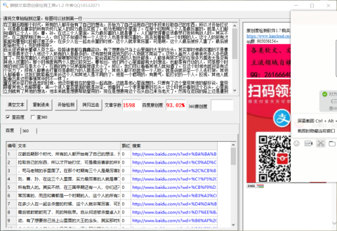

《三国演义》中他是帮助三家对立局面成立重要的人，是谁呢？
在汉朝后期那个时代，所有的人都开始有了自己的想法，开始为了自己运用自己的手段来拉取自己的东西，所以才开始打仗，可是最后曹家的所有功劳几辈人的努力最后变成了，司马老贼的手里面了。在那个时期有三个人是最厉害的，就是人们都知道的三个人，刘，曹，孙，在这三个人里面，实力最厉害的人就是曹了，人们都觉得曹应该最早打败所有敌人的。其实不然，在三国早期还有一人，你们还不知道还有一个人这个人也是非常厉害的，而且和曹都是一个时期的人，这个人的所有才能都和曹相比较都还差不多，在多少人在一起去杀董的时候，这个人就非常厉害，可是啊，这个人最后被奸人害了，最后被射箭射死了，死的特别早。
自从何进被杀董卓入京之后，各路诸侯都在蠢蠢欲动，有了想要自己当上山里面的大王的念头，其实那时候最厉害的不是曹，而是袁术这个人他这个人所有的人是最多的，还有那些其他地方的小人物就不用说了。这些人虽然人多粮食也多人多也就算了，可是厉害的人也都在这里啊那些能打仗的，能说话能写东西的人到处都是，人都是有所不足的在很多方面老大是没有其他人厉害的。那个时候就有两个人就比较突出，曹和刘，他们两个心里面都有大的想法，也都是有行动的人，可是那个时候的他们实在是太小了，在袁的两个兄弟面前显得太小了。所以，我们可以看看其他人就知道了。在这个时候也就孙坚有这个实力了，所有人都要去打董可是最吃力的人就是孙坚了，其他人都不吃就他一个人吃，就是说就孙坚一个人去打架，其他人都看着。这我们就能看出来孙这个人和其他人是不同的了，他是一个聪明的，有勇气，能打仗的一个人。反观，其他人就能看出来这些事情其中的不一样了。
董在被孙坚打败逃走的时候，他还带着现在的皇帝一起逃跑，这就是他心里面想的，只要有了这个皇帝其他的都好说，皇帝跟着其他人也都跟着，第一个进入皇宫里面的就是孙坚，他看到了一个非常重要的石头。这个时候孙看到这个石头，心里面立刻就有了其他的想法，他本来就是想要帮助皇帝的，现在是想要用这个石头自己来当老大了。然而在返回的路上还是遭到了一些人的攻打，袁就说这这次孙回来肯定会遇到一个这样的路，我们可以在这个地方共打他，可是我们又不能自己动手，我们必须要找个人帮助我们，于是刘表去取了，就在这个时候孙坚被杀了，其实他的死不是孙的原因，而是袁的贪心，和他自己的贪心，最后死掉了。
其实孙坚会被刘赌在这被他杀死，可是为什么偏偏是他呢，他们俩个基本上都是没有什么往来的，也没有必要非要吧孙坚给杀掉啊，刘可以直接去阻拦就可以了，不去打不就好了假装堵一下他就好了，为什么偏偏要把它弄死呢，这就能看出来刘表心里也是有其他想法的，可是他却觉得咽不下这口气。孙坚当即决定率兵攻打刘表，刚刚还没打的时候结果就很好了，孙坚看到刘表过来居然被他骗了，还真的过去了。可是没想到啊，刘表是多么的坏啊，在他们刚进来就已经帮他围住了，然后用弓箭把它射死了，然后还把船给堵住，让他们没办法逃跑。可是没想到孙到这里他的事业就结束了。他死了以后，后面两个孩子都是很不错的，都是非常厉害的人，大儿子最后为了后面三角形的成立做出了很重要的铺垫，然后儿子上去了，就开始了三角形的真正开始， 我们能够看到，孙家三个人的基因特别的好啊，三个人长得都非常好看，而且还非常聪明。这个时候，刘和曹都还没有开始呢，只不过是刚刚露个面而已，什么东西都没有。奈何天妒英才，孙坚和孙策两位世之英雄都过早夭折，没有完全发挥出自己出色的才能，这个是很难过的事情。
我们能够看到，孙家三个人的基因特别的好啊，三个人长得都非常好看，而且还非常聪明。这个时候，刘和曹都还没有开始呢，只不过是刚刚露个面而已，什么东西都没有。奈何天妒英才，孙坚和孙策两位世之英雄都过早夭折，没有完全发挥出自己出色的才能，这个是很难过的事情。
小编认为，对于孙坚这个人我是非常喜欢的，也是非常气的。我喜欢的是他的聪明，他的带兵打仗，以及让人们一直都归顺他打了整个江东地盘。气的是，他居然为了一个破石头，一时的脑子热，将自己逼入了，最后死去的道路，没有办法在后面路上面看到他自己。当然，不可否定的是现在三角形的成立，三角的一个角的缺口也是孙坚的一直的努力才变成这样的。所以，我个人觉得孙坚的作用是很大。
